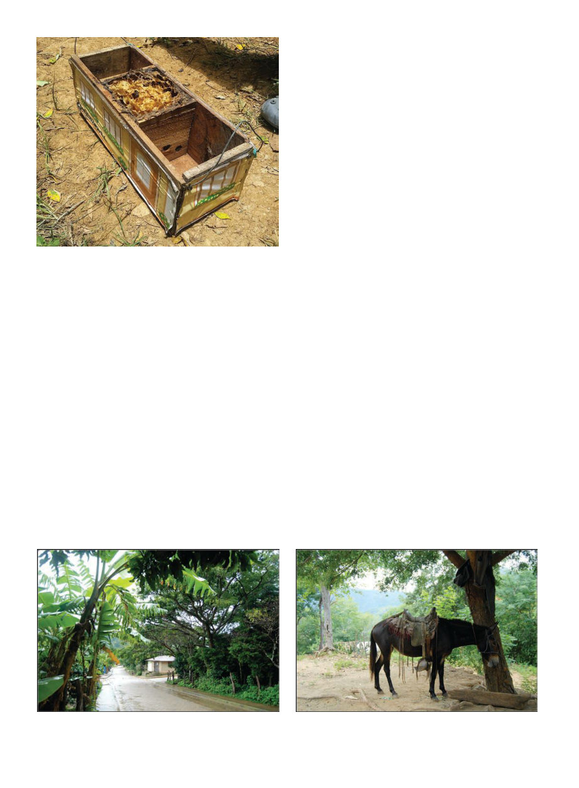

American Bee Journal
1038
El Gato also showed us two sting-
less bee hives, they were small and ob-
long, like a large shoebox, and whim-
sically decorated to look like a house.
He had gotten them pre-made from
another local beekeeping co-op (Com-
jeruma RL). The bees (a melipona spe-
cies) were small and skittish like fruit
flies, and only occupied a third of the
box, seeming uninterested in the rest.
I was able to transfer some knowledge
I myself had only picked up the other
day — in Dr. Van Veen’s stingless bee
presentation the hives had all been
longer vertically than horizontally;
I suggested that maybe these hives
were made for a different species and
the local stingless bees would prefer a
more vertical arrangement.
We were able to try some of the
stingless bee honey (they produce
only a few cups of honey each per
year), which was very tart. I’ve al-
ways found it very interesting how
different stingless bee honey can taste
from honeybee honey from presum-
ably the same plants.
On the weekend we drove an hour
deeper into the mountains to the tiny
mountain town of San Jose de Cusma-
pa, draped over some ridges high in
the mountains. In this very quiet town
there seemed to be fewer than half a
dozen vehicles, and the clip-clop of
horses or donkeys down the cobbled
streets was very common. While Fab-
retto’s headquarters is in the national
capital, this small town, founded by
Padre Fabretto himself, I gather is
kind of its heart and soul. I stayed
in a guest house with several Euro-
pean volunteers working for Fabretto
as teachers at the local school. One
day while exploring the outskirts on
horseback with a French volunteer,
our local guide said, “It’s two more
hours this way to Honduras.”
“By car?” I asked naively.
The French girl laughed. “No one
drives here. By horse.”
We did drive on one of the days,
up and down some absolutely hair-
raising narrow dirt roads on the
mountain slopes to a very remote
community called La Naranja. There,
at the end of the road, we found three
adobes with the cracked plaster of a
Zorro film, under a lush tropical can-
opy and surrounded by banana trees
(but no oranges that I recall, despite
the name). Several young men came
to receive bags of flour and supplies
that Marcus was unloading from the
back of the Land Cruiser for them.
Then he looked at me with surprise.
“This boy says he knows you.”
It turns out he had been at the
Sweet Progress training I had gone to.
Small world.
As Vincent later explained to me,
Sweet Progress actually partners with
Fabretto, inviting Fabretto beekeepers
to come down to training seminars
and including Fabretto honey in their
packaging since they are able to lever-
age a better price for the beekeepers.
The hives in La Naranja were pretty
good, though with a bit more small
hive beetles than I’d quite like to see. I
prescribed rotating out the dark comb
a bit more. Small hive beetles really
love dark comb.
Back in San Jose de Cusmapa, we
later visited the Fabretto hive-mak-
ing carpenters in their workshop.
Sometimes there is a big disconnect
between people making hives and
the beekeepers, but it was nice to see
they had already tweaked the design
and were very willing to discuss po-
tential improvements. Returning to
Somoto we visited some other bee-
keepers, and another nearby organi-
zation that made and sold beehives.
Both the technicians this organiza-
tion sent to the field with us were
women, and we worked for the lon-
gest sustained time of this trip going
through hives. I had been concerned
that in the tropical heat it might be
impractical to spend hours working
The stingless hives
examined were
divided into three
sections but the
bees seemed to
prefer to occupy
just one.
A street in the quiet mountain village of San Jose de Cusmapa
Transportation parked at the “end of the road,” community of
La Naranja